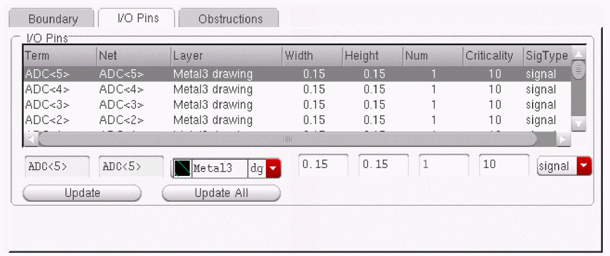
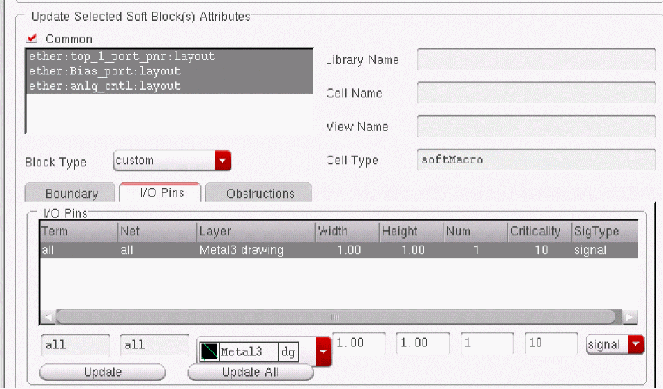

Changing I/O Pin Attributes
The I/O Pins tab lets you update the layer, width, height, number, criticality, and signal type of existing pins. This table is initialized with Term and Net Names from the symbol view of the selected soft block.
When you click the I/O Pins tab, the form changes to display the I/O Pins table as shown below.

You can select one or more rows to modify in the table. If you select multiple rows, the fields below the table list the respective values only if they are same for the selected rows. Otherwise, the fields display AS IS.
To add or change I/O pin parameters,
-
From the layout window menu bar, choose Edit – Soft Blocks.
The Edit Soft Blocks form is displayed. - Select the blocks whose pins you want to change.
- Select the entry in the table that you want to update.
-
Specify the new value in the field below the column that you want to update.
For example, if you want to update the layer purpose for a net to metal1 drawing, click the cyclic list below the Layer column and select metal1 dg. - Do one of the following.
You can also update multiple soft blocks in the design simultaneously.
To update multiple soft blocks,
-
Select multiple rows in the Soft Block List or select the Common button in the Update Selected Soft Block(s) Attributes section.
The I/O Pins tab changes as shown below.
 -
Change the parameters as required and click Update.
All the pins in all the selected blocks are updated with the new values.
Related Topics
Return to top